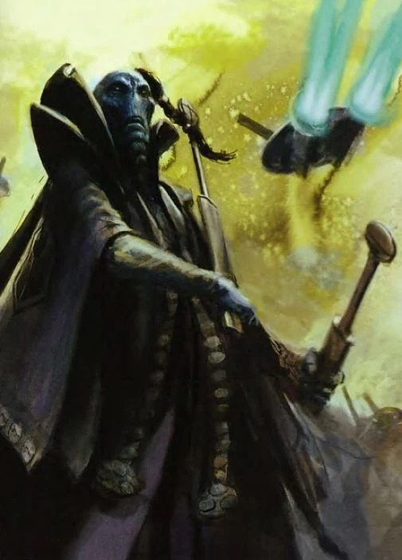
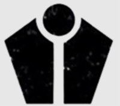

Ethereal
| Ethereal caste | |
|---|---|
| Ruling caste of the T'au Empire | |
 An Ethereal on a battlefield of the eastern fringe, from an Ordo Xenos dossier Artwork © Games Workshop | |
| Name | Aun ("celestial") |
| Role | Rulers and priests |
| Origin | c. 37th millennium, the Mon'tau[a] |
| Head | The Ethereal Supreme (Aun'o), formerly Aun'Va |
| Governing body | The Ethereal High Council, on T'au |
| Mark |  Ethereal sigil |
| Known for | The founding of the caste system; the Greater Good |
The Ethereals (aun in the T'au tongue) are the fifth and ruling caste of the T'au species. They are few in number, and every member of the four other castes defers to them without question. The Ethereals are at once the empire's aristocracy and its priesthood, the arbiters of policy, and the authors of the philosophy of the Greater Good.[1]
The Imperium has an old suspicion that this deference is not wholly natural. Inquisitorial examination of captured T'au and of the Ethereal body has found structures in the Ethereal that appear to emit chemical signals, and the Ordo Xenos believes that the T'au react to them without being aware that they do. The Ethereals, who allow no dissection by outsiders, say nothing of this. Ordo Xenos scholars note that the matter is of little use to the Imperium, since the T'au's loyalty to the Ethereals has also been shown to hold when no pheromone is present.[1][2]
Origin
[edit]T'au tradition holds that the species was destroying itself in a time of war between the four castes, a period called the Mon'tau, when the Ethereals appeared and ended it. The best-known account is the legend of the Ethereals of Fio'taun. A host of plains warriors and Air T'au besieged the greatest fortress-city of the builder T'au, on the plateau of Fio'taun, for five seasons. On a night when the city's supplies were nearly gone two strangers came, one to the besiegers and one to the city, and persuaded each side to hear the other. By the morning a truce was agreed. The Ethereals spoke of a Greater Good that the tribes could reach if they set aside war and worked in harmony.[a]
The tale is accepted by the T'au as history. The Ordo Xenos has recorded another version, that the Ethereals were created, or shaped, by an unknown intelligence, and that the species' unusual speed of development in the last few thousand years may be due to it. No evidence has reached the Imperium to decide the matter.[1]
Organisation
[edit]The Ethereals are set apart from other castes by their appearance: they are taller than average, have a distinct bearing and their skin is often blue, and their dress is more formal. They are attended by Honour Guards drawn from the Fire Caste, who are bound by oath, and by Shas'ui bodyguards in white. Their palaces are the temple-domes of the sept worlds. When an Ethereal grows old, he makes the Last Walk into one of these domes and does not return. What happens there is not known to the other castes.[1]
The Ethereals sit as the Ethereal High Council on T'au, and the council is presided over by the Ethereal Supreme, or Aun'o. Each sept world and each large fleet has its own Ethereal, who advises the military commander, and the Fire Caste commander does not set out without one. In the last century the Ethereal Supreme was Aun'Va, who is dead, though the Council has concealed this. The Imperial records name only a few other Ethereals. Among them is Aun'Shi, a warrior-Ethereal who bears the honour blade and is counted among the empire's few Ethereals of war.[3]
Role in the empire
[edit]Each caste has a set of tasks, and the Ethereals unite them. They press the Earth caste for new inventions, set goals for the Water caste's negotiators, give orders to the Air caste's fleets and restrain the Fire caste's zeal. They are also the empire's priests. There is no worship of gods among the T'au, but reverence of the Ethereals is the nearest thing to it. The Ethereals are the only caste that does not engage in any craft or trade.[1]
The Ethereals also direct the Gue'vesa programme and the treatment of the empire's allied species, the Kroot, the Vespid and others. The Ethereal who leads an expedition is expected to present the Greater Good to the aliens, as well as the Water caste's usual terms.[1]
Imperial view
[edit]The Imperium holds the Ethereals to be the empire's greatest weakness and its greatest strength. A cadre without its Ethereal is reported to be less ready to follow orders, and the assassination of Aun'Va in 999.M41 has been treated by Imperial commands as a model of how the empire might be broken. Ordo Xenos agents on the eastern front are instructed to take Ethereals alive where this is possible.[3][4]
Timeline
[edit]| Date | Event |
|---|---|
| Late M37 (estimated) | The Mon'tau; the Ethereals of Fio'taun end the wars of the castes |
| 502.M37 | The Great Expansion of the T'au Empire begins |
| 018.M39 | The Second Sphere Expansion begins on the orders of the Ethereal Supreme Aun'Wei |
| c. 900.M41 | Aun'Va succeeds Aun'Wei as Ethereal Supreme |
| 742–745.M41 | The Damocles Gulf Crusade |
| 997.M41 | Aun'Va opens the Third Sphere Expansion |
| 999.M41 | Aun'Va is killed at Agrellan; the Ethereal High Council conceals his death |
| M42 | The Ethereals govern the empire collectively |
See also
[edit]
Notes
[edit]- ^ a b The T'au place these events in the late 37th millennium by Imperial reckoning. The Imperial scholars have no independent record and the date is given as an estimate. Some in the Ordo Xenos suspect an outside power in the Ethereals' appearance.
References
[edit]- ^ a b c d e f Spurrier, Simon. Fire Warrior (novel). Black Library. Codex: Dark Angels (6th Edition) (Digital Edition), pg. 79. Games Workshop.
- ^ Codex: Tau (6th Edition), pp. 7, 9, 35, 60-61, 97. Games Workshop. Codex: Tau Empire (7th Edition) (Digital Edition), "The Castes," "Ethereals". Games Workshop.
- ^ a b Codex: Tyranids (5th Edition), pg. 21. Games Workshop. Codex: Tau (4th Edition), pp. 5-6, 9-10, 28, 33, 42-43, 65. Games Workshop.
- ^ Codex: Tau (3rd Edition), pp. 5-6, 9, 19, 23, 52. Games Workshop. Spurrier, Simon. Xenology (Background Book). Black Library, pp. 14-15, 17, 19.